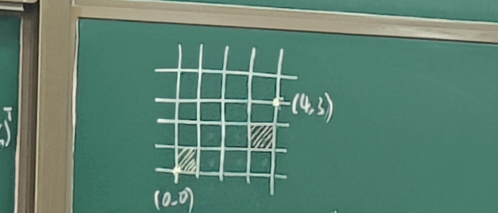
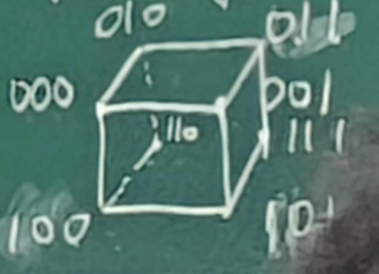

范数、距离与相似度
3333333
范数（“长度”）
定义1：设\(||\cdot||\)为向量空间\(R_{n}\) 的实值函数满足：
\(1^o\,\) 非负性: \[ ||x|| \geq 0 \]
其中，\(||x||=0 \iff x = 0\)
\(2^o\,\) 齐次性：
\[\forall k\in R,||kx|| = |k| ||x||\]
\(3^o\,\) 三角不等式： \[||x+y||\leq ||x|| + ||y||\] 则把\(||\cdot||\)称为向量范数。
常用的向量范数
\(x=(x_{1},x_2,\cdots,x_n)^T\)
\(1^o\,\) 0-范数:
\[{||x||}_0 = n\]
其中n为x中非零元素的个数。
\(2^o\,\) 1-范数:
\[{||x||}_1 = \sum_{i=1}^n|x_i|\]
\(3^o\,\) 2-范数: \[||x||_2 = \sqrt{\sum_{i=1}^nx_i^2}\] \(4^o\,\) \(\infty\)-范数: \[
||x||_\infty = \max_{1 \leq i \leq n}|x_i|
\] 定理 (范数的等价性) \[
\begin{array}{ccccc}
m||\cdot||_{P_2} & \leq & || \cdot ||_{P_{1}} & \leq &
M||\cdot||_{P_2} \\
||x||_\infty & \leq & ||x||_1 & \leq & n||x||_\infty \\
||x||_\infty & \leq & ||x||_2 & \leq &
\sqrt{n}||x||_\infty
\end{array}
\] 定义2（矩阵范数) \(A = (a_{ij})m*n\)
满足定义1的三个条件且 \(||AB|| \leq
||A||\cdot||B||\) 常用的矩阵范数
1-范数(列) \(||A|| = \max_{1 \leq j \leq
n}\sum_{i=1}^{m}|a_{ij}|\) \(\infty\)-范数(行) \(||A|| = \max_{1 \leq i \leq
m}\sum_{i=1}^n|a_{ij}|\)
2-范数(谱) \(||A|| =
\max|A_TA的本征值|\)
F-范数 \(||A||_F =
(\sum_{j=1}^n\sum_{i=1}^m|a_{ij}^2)^{\frac{1}{2}}\)
矩阵常数可由向量范数诱导而得(相容性)
范数诱导的距离
注:距离满足定义1的三个条件且满足对称性(A到B的距离等于B到A的距离)。
定义3（闵可夫斯基距离）有\(x
= (x_1,x_2,\cdots,x_n)_T,y=(y_1,y_2,\cdots,y_n)_T\)
\[
{\alpha}_P(x,y) = (\sum_{i=1}^n|x_i-y_i|^P)^{\frac{1}{p}}
\] \(1^o\,\) P = 2
欧几里得距离
\(2^o\,\) P = 1 曼哈顿距离
正南正北”导航”距离。 \(3^o\,\) \(P = \infty\) 切比雪夫距离 ：
\[\alpha_P(x,y) = \max_{1 \leq i \leq
n}|x_i-y_i|\]
老师举了个例子即：国际象棋king移动到其他位置的最快路径长度。
如图：

曼哈顿距离为7，切比雪夫距离为7。
\(4^o\,\) p = 0 汉明重量(即\(x_i = y_i\))： \[\alpha_0(x,y) = \sum_{i=1}^n(x_i-y_i)^0\]

定义(莱文斯坦/字符串距离)
从一个字符串变为另一个字符串的步数。
e.g. \(safe -> security\)
使用了7步。
定义(推土机距离)从一个概率分布变为另一个概率分布的最快步
定义(堪培拉距离)加权的曼哈顿
\[\alpha_{can}(x,y) =
\sum_{i=1}^n\frac{|x_i-y_i|}{|x_i+y_i|}\]
相似度
不是距离，定义1的前两个条件。
定义(余弦相似度) $_(x,y) =
定义(皮尔逊相关系数) \(x =
(x_1,\cdots,x_n)^T,y = (y_1,\cdots,y_n)^T\)
\[\rho_{x,y} =
\frac{Cov(x,y)}{\sigma_x\sigma_y} =
\frac{E[(x-\mu_x)(y-\mu_y)]}{\sigma_x\sigma_y}\] e.g.
Alice 给Bob发送序列 第一次为\(x =
(80,85,90,75,95)^T\) ,第二次为\(y =
(70,75,85,60,90)^T\)
计算得到\(\mu_x=85,\mu_y = 76,Cov(x,y) =
75,\sigma_x=7.07,\sigma_y=10.68,\rho_{x,y} = 0.997\)。
\(\rho_{x,y}\)接近于1，说明具有强线性正相关。
定义（斯皮尔曼相关系数）
\[\rho_{x,y} =
\frac{\sum_{i=1}^n(R(x_i)-\overline{R(x)})(R(y_i)-\overline{R(y)})}{\sqrt{(\frac{1}{n}\sum_{i=1}^{n}(R(x_i)-\overline{R(x)}))(\frac{1}{n}\sum_{i=1}^n(R(y_i)-\overline{R(y)}))}}\]
R表示位次,简化版如下： \[\rho_{x,y} =
1-\frac{6\cdot\sum_{i=1}^nd_i^2}{n(n^2-1)}\]
定义(杰拉德定理) \(X = \{x_1,\cdots,x_n\}, Y = \{y_1,\cdots,y_n\}\) 二进制字符串 \[\rho_j(X,Y) = \frac{|X\cap Y|}{|X\cup Y|}\] 定义(Sorensen-Dice指数) 文本分类和图像处理 \[\rho_s(X,Y) = \frac{2\cdot |X\cap Y|}{|X|+|Y|}\]